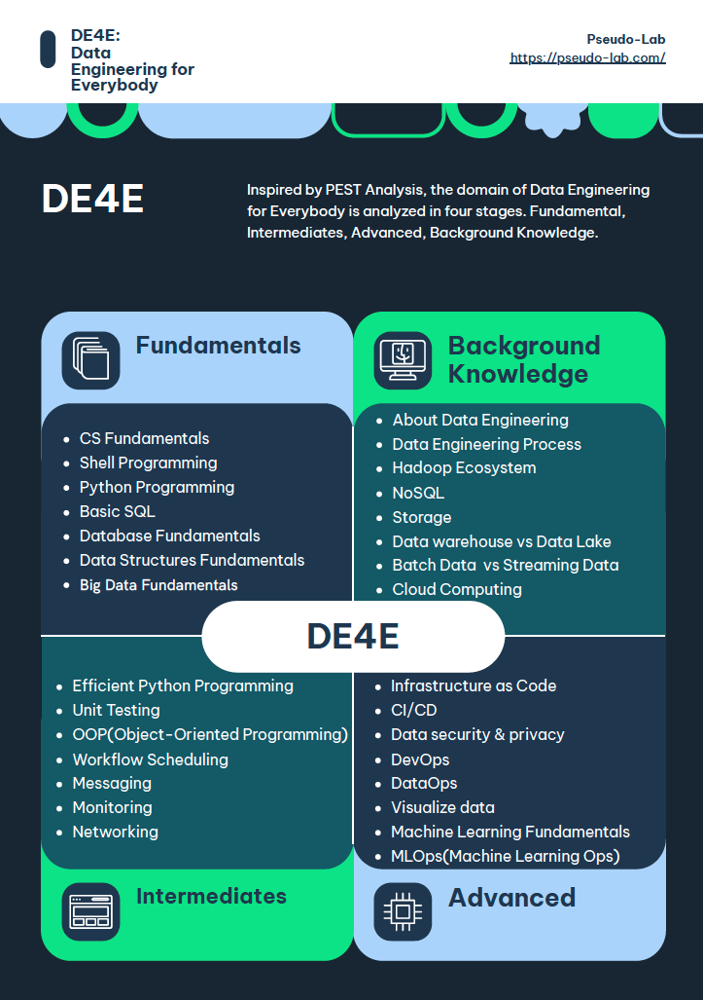

Data Engineering for Everybody#

DE4E: Data Engineering for Everybody by Pseudo-Lab
This repository aims to give a complete picture from the fundamental data engineering landscape to advanced data engineering for Data Lover!
Acknowledgement 🙏#
DE4E: Data Engineering for Everybody는 가짜연구소의 DFS 프로그램에서 시작되었습니다. 시작에 앞서 감사의 말씀을 전합니다.
가짜연구소는 DataCamp의 후원을 받아 Donates 프로그램을 진행하고 있습니다. 프로그램을 통해 구직자, 불완전 취업자, 비영리 연구 과학자, 학생분들께 DataCamp에서 제공하는 다양한 코스와 트랙을 제공합니다. 본 프로젝트는 DataCamp Donates 프로그램 중 하나인 Data Science Fellowship으로부터 시작되었습니다.
DE4E는 데이터 분석가, 데이터 과학자, 데이터 엔지니어, 머신러닝 엔지니어가 함께 모여 데이터의, 데이터에 의한, 데이터를 위한 Data Engineering Repository를 만들어 나가고자 합니다.
DE4E: Data Engineering for Everybody#

Fundamentals#
CS Fundamentals
Introduction to DE4E: Data Engineering for Everybody
Introduction to Data Engineering
Introduction Shell Programming and Data Processing in Shell
Introduction to Bash Scripting
Python Programming
Introduction to Relational Databases in SQL
Pandas for data processing
Database Design
Introduction to Apache Airflow
Introduction to PySpark
Intermediate#
Efficient Python Code
Writing Function in Python
Unit Testing for Data Science in Python
OOP(Object-Oriented Programming) in Python
Big Data Fundamentals with PySpark
Data Analysis in SQL
Messaging
Monitoring
Networking
Advanced#
Cleaning Data with PySpark
Introduction to IaaC(Infrastructure as Code)
Introduction to CI/CD(Continuous Integration and Continuous Delivery)
Introduction to Data security & Privacy
Introduction to DevOps
Introduction to DataOps
Introduction to Data Visualization
Machine Learning Fundamentals
Machine Learning Ops
Background Knowledge#
About Data Engineering
Data Literacy
Data Analyst vs Data Engineer vs Data Science
Data Engineer’s responsibilities
Structured Data, Semi-Structured Data and Unstructured Data
OLTP vs OLAP
ETL, ELT and Reverse ETL
Change Data Capture(CDC)
Data Lake vs Data warehouse
Lake house
Data engineers process
Batch Data vs Streaming Data
Batch processing vs Stream processing
Scheduling
Hadoop Ecosystem
Parallel computing
Introduction to Cloud Computing
Optional Supplementary (Courses, Readings & Media, GitHub)#
Course Recommendation 💻#
-
Coursera Data Engineering Specialization Courses
Coursera Cloud Platform Courses
Cloud Training
Google Cloud
Readings & Media ▶️#
GitHub 👨💻#
Contributors 😃#
About us 👋🏼#
가짜연구소는 머신러닝, 데이터 사이언스, 데이터 엔지니어링을 중심으로 모인 비영리단체입니다. 누구나 원하는 연구를 할 수 있는 시작점이 되는, 진짜보다 더 진짜 같은 연구소를 꿈꾸고 있습니다. 공유(Share), 동기부여(Motivation), 함께하는 즐거움(Delighted to work together)라는 핵심가치를 추구하며 약 1800여 명의 연구원분들이 오늘도 함께 머신러닝, 데이터 사이언스, 데이터 엔지니어링 분야에 선한 영향력을 행사하고 있습니다. 보다 자세한 내용은 여기서 살펴보실 수 있습니다.